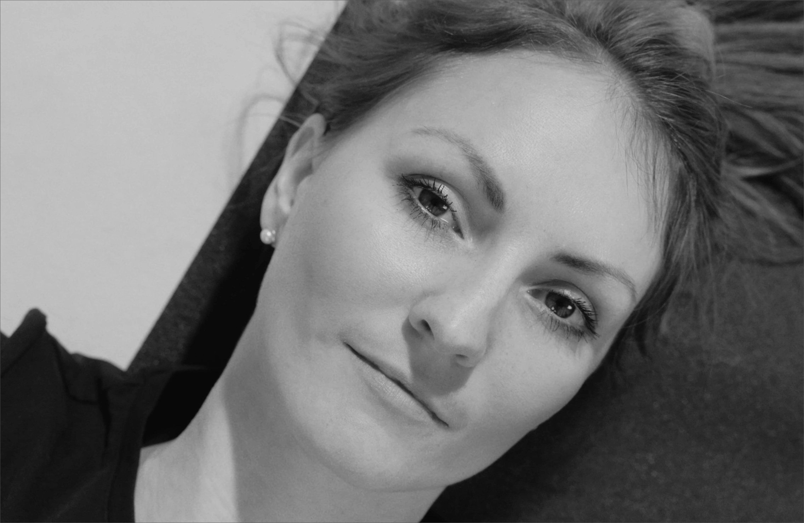
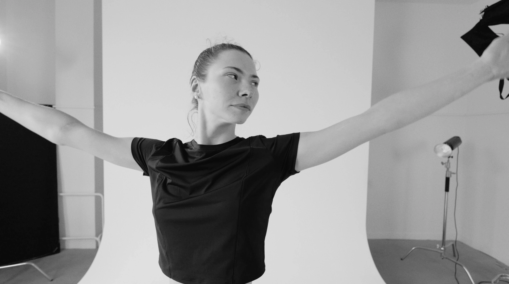

Lenka Schwarzová

„Jsem tanečnice a máma dvou dětí. Jsem fyzioterapeut, momentálně na cestě Feldenkraisovy metody, která mě absolutně oslovila.“
Pohyb je mou vášní a zároveň mě vždy fascinovalo samotné lidské tělo. Jak funguje v rámci pohybu, zajímalo mě, jakými způsoby je možné podpořit pohybový potenciál. Studium fyzioterapie mi zprostředkovalo vhled do anatomie, pohybových vzorců a jejich patologie, a také nabídlo spoustu přístupů v rámci terapie funkčních poruch, akutních i chronických. Na studiích mě velice zaujala Feldenkraisova metoda, kterou jsem se rozhodla dále studovat.
Líbí se mi její principy založené na svobodě pohybu a naprostém nehodnocení jakéhokoli pohybového vyjádření. Je to přístup vědomé pozornosti vůči sobě a citlivosti na detail. Tyto myšlenky pro mě mají přesah jak v pohybové terapii, tak v běžném životě.
Současně také prohlubuji zkoumání a hloubku tanečního projevu. Nacházím v něm nejen svou cestu realizace, ale také podněty pro práci s tělem. Kvalita pohybu ovlivňuje kvalitu našeho života. Ráda Vás budu na této cestě inspirovat.
Tři pilíře
mé práce
Moje praxe nestojí na jediné dogmatické teorii. Věřím, že nejhlubší porozumění pohybu vzniká spojením vědy, uměleckého vyjádření a vlastní citlivosti.
Fyzioterapie
Anatomické souvislosti, patologie pohybu a bezpečné vedení. Fyzioterapeutické vzdělání mi dává základ pro práci s lidmi po úrazech, operacích či s chronickými problémy.
Profesionální tanec
Estetika, plynulost, rytmus a vyjádření. Tanec mě inspiruje, jak vnímat tělo jako jedinečný nástroj pro komunikaci a prožívání radosti bez omezení.
Feldenkraisova metoda
Vědomá pozornost k detailu, neuroplasticita a naprosté nehodnocení. Zde nacházím způsob, jak podpořit váš mozek v objevování nových kvalit a možností pohybu.
Principy mé praxe

Prostředí absolutního
nehodnocení
V mých lekcích neexistuje „správně“ nebo „špatně“. Každý pohyb, který vaše tělo v danou chvíli zvolí, je tou nejlepší možnou odpovědí vaší nervové soustavy na aktuální situaci. Opouštíme tlak na výkon, abychom dali vašemu mozku prostor se učit, nikoli se bránit.
Respekt
k tempu učení
Každá nervová soustava vyžaduje jiné množství času na vstřebání změn. Nikam nespěcháme, neporovnáváme se. Pomáhám vám najít takovou jemnost, ve které váš mozek rozpozná parazitní napětí a s lehkostí ho opustí.

Tichý dialog beze slov:
Funkční integrace
Při individuální práci vás nenavádím pouze slovem, ale používám bezprostřední, jemný a respektující tělesný dotek. Tento dotek slouží jako zrcadlo — ukazuje vaší nervové soustavě, kde drží zbytečné napětí, a bezpečně ji vede k nalezení nových možností uspořádání.
Individuální setkání probíhá na speciálním nízkém stole a je přizpůsobeno vašemu aktuálnímu fyzickému či emocionálnímu stavu.
Kvalita pohybu ovlivňuje
kvalitu našeho života
Podívejte se na aktuální volná místa ve skupinových lekcích, nebo napište a domluvte si individuální setkání.
Volné termínyNejčastější otázky
Jako fyzioterapeutka hlídá bezpečnost a přesnost každého pohybu. Taneční zázemí naopak vnáší do lekcí plynulost, estetické cítění a prostor pro vyjádření svobody.
Ano. Lenka poskytuje individuální lekce, kde jako prostředek využívá často přístup zvaný Funkční integrace (Functional Integration). Během nich vás navádí přímo jemným dotykem rukou, což umožňuje navést vnímání do nejjemnějších struktur a způsobu pohybu.
Od chronických bolestí zad, krční páteře a ramen přes regeneraci po operacích a úrazech až po nervosvalovou koordinaci spojenou s tancem, herectvím nebo hrou na hudební nástroj.